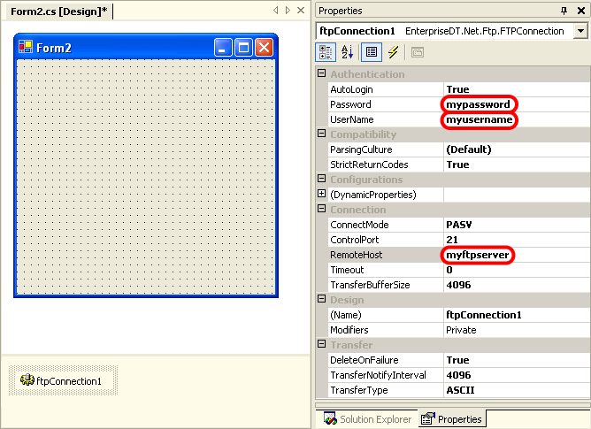
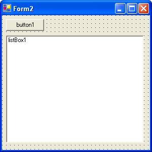
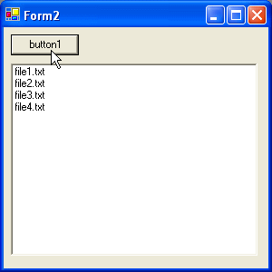

3. Setting FTPConnection Properties
Set the FTPConnection properties as shown below:

4. Placing Controls on the Form
Place a button and a listbox on the form as shown below:

5. Making Things Happen
- Double-click on button1 to create an event-handler for it.
private
void
button1_Click(object sender, System.EventArgs e)
{
}
- Place code as follows into the event-handler:
private void
button1_Click(object
sender, System.EventArgs e)
{
ftpConnection1.Connect();
string[] files
= ftpConnection1.GetFiles();
listBox1.Items.AddRange(files);
ftpConnection1.Close();
}
- Run the application and press the button. You
should now see a list of files in the list-box:

Troubleshooting
Common sources of problems are:
- Incorrect server address set (i.e. the RemoteHost property
of FTPConnection).
- Incorrect user-name or password (i.e. the UserName and
Password properties of FTPConnection).
- No files on the server. If nothing seems to
happen when the button is pressed, it may be simply because there are
no files in the user's directory on the server.
- For other problems you may refer to the EDT
forums.